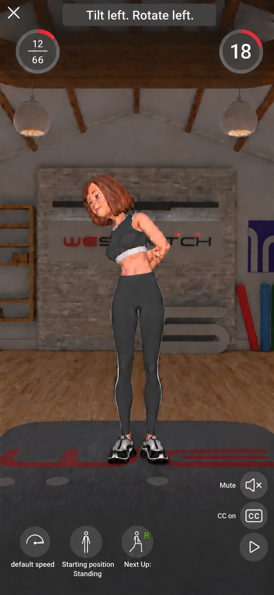
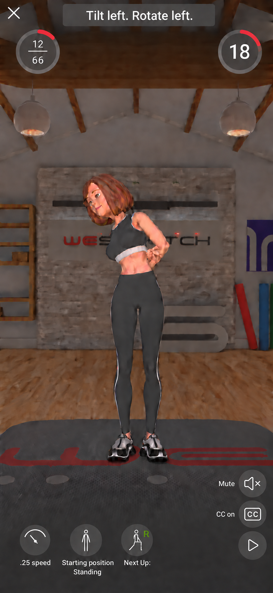
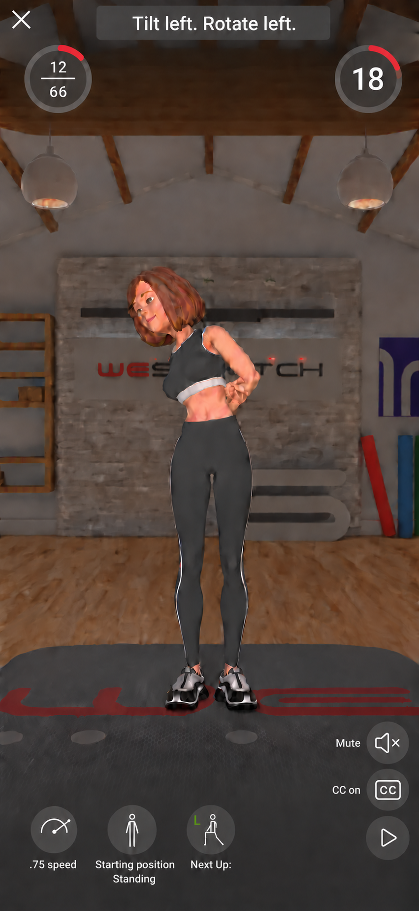

Starting position sits between Speed and Next Up. Audio, CC and Play stack on the right.
R and L are independent pose examples, not linked to speed. Select an image for full size.



Concept previews: exact 20% sizing, gauge uniformity and the 2 o'clock arc endpoint still need precision refinement.
Design notes